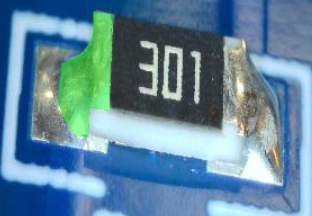
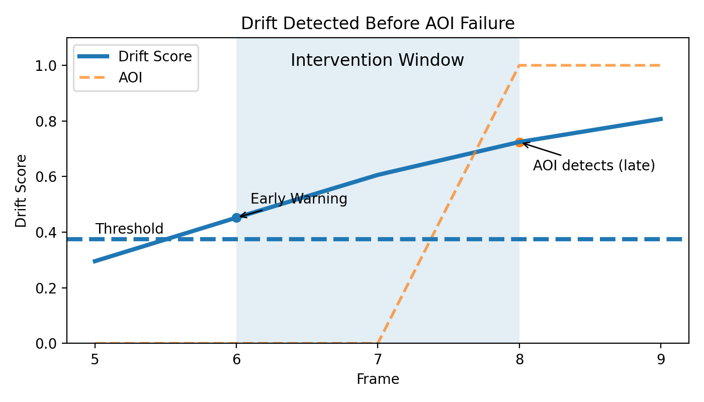

SMT lines suffer from hidden process drift, leading to late defect detection, rework, and yield loss.
Vikshepa uses physics-informed ML on optical inspection data to detect subtle process drift early—before AOI failures occur.
Detect drift early and act before defects occur

Detected anomaly on PCB

Drift exceeds threshold before AOI detection (intervention window)